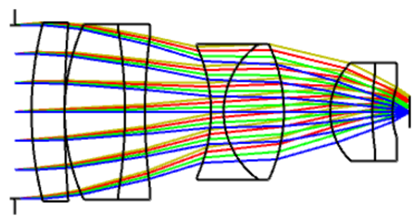
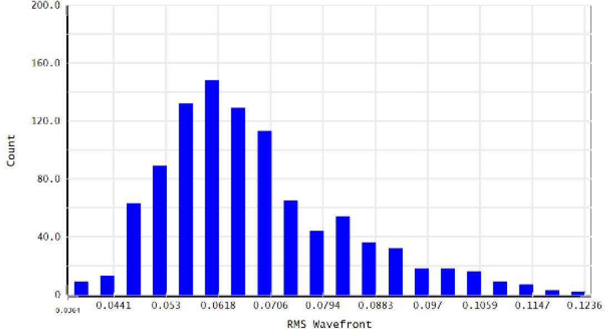
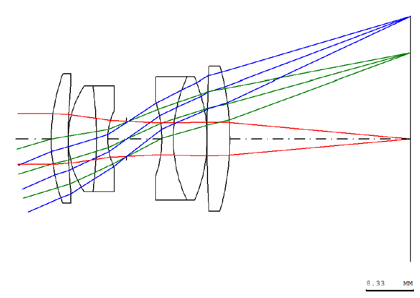
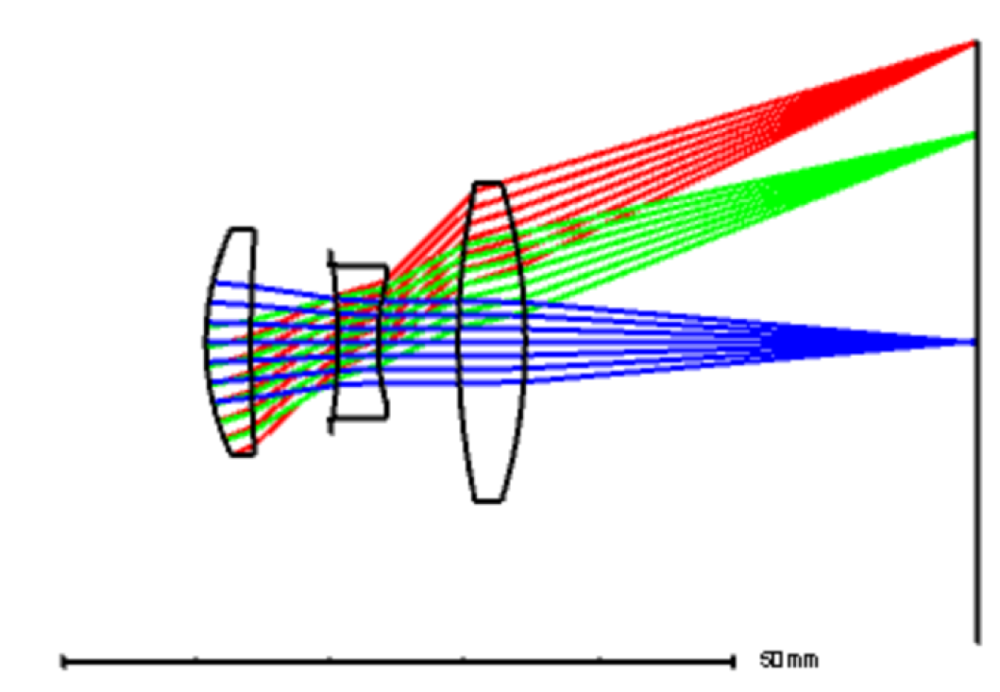

Lens Design Projects
A collection of my lens design projects created using Code V and Zemax.
Summary
This page is a collection of all the lens design projects I have worked on over the years. I have experience starting from a first-order design as well as optimizing from a starting point in both Zemax and Code V. As a part of a summer internship with ASML in Wilton, CT, I gained experience putting together optical systems using commerically-available lenses as a part of a testbed modification plan. I also have experience making lens drawings and documentation in order to solicit a quote from lensmakers.
Included Projects
- Coupling lens for LIDAR system
- Yieldstar testbed upgrade (ASML Wilton, CT)
- Microscope objective
- Double gauss
- Cassegrain telescope
- Apochromatic triplet
Microscope Objective
An F/1 microscope objective with less than 0.07 RMS wavefront error operating at the FdC lines. Performed Monte Carlo tolerancing.


Double Gauss
Since most of the power of the Double Gauss is in the first lens group, I optimized the first lens
group to correct for spherical aberration and coma. The second lens group has almost no
power, so I optimized it for field correction, correcting for field curvature, astigmatism, and
distortion. I used model glasses during optimization, and then used a glass map to find suitable
glasses once I was close to a solution.

Cooke Triplet
I showed in Zemax how the Cooke triplet design corrects for all third-order aberrations, i.e. spherical aberration, coma, astigmatism, field
curvature, and distortion.
